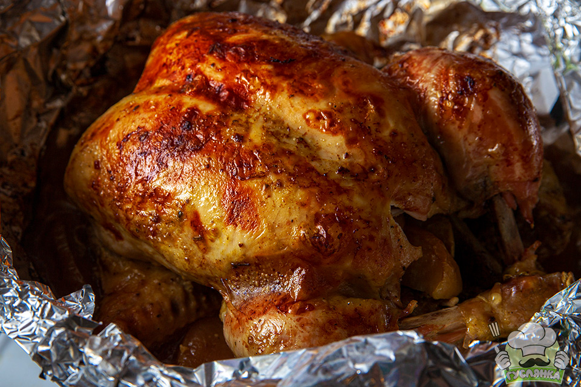

Кулінарія - це складна наука, бо щоб правильно приготувати блюдо, треба знати і хімію і фізику. В цій презентації я хочу розповісти про взаемозв'язок між кулінарією і фізикою.
Що нам взагалі треба знати, при приготуванні наприклад, курки в духовці? По перше теплоємність м'яса, та температуру, при якій воно буде запікатись. Враховуючи втрати тепла, можна розрахувати, до якої температурі нам треба розігріти духовку. Щоб більше саме запікти курку, треба знати як на довго зберегти тепло навколо грудинки.

Одже для скорішого приготування курки, краще
запікати її окремо від інших страв, бо вони теж
вбирають в себе частину випромінюваного тепла. Також краще завернути грудинку у фольгу, так м'ясо на довше збереже своє тепло.
=￣ω￣=
Отже, які фізичні властивості кожен день зустрічаються під час готовки:
Логічно, що це здатність тіл передавати тепло від гарячіших до холодніших. Взагалі, тепло — це хаотичний рух молекул і атомів, чи їх вібрація, якщо це метал. Саме тому кухонний посуд виготовляють із металів, у яких теплопровідність висока, а дерев'яними ложками можна їсти гарячу їжу.
Тут йдеться одночасно про теплоту, теплоємність та про кристалічну структуру. Звичайно, шматок м'яса швидше розморозити у мікрохвильовій печі або у воді. Але таким способом можна користуватися тільки якщо вам потрібно зварити кашу з м'ясом для тварин. Бо продукт, який швидко дефростований – мертвий продукт.
Фізика також визначає відстань та час при готуванні. Наприклад, знаючи температуру та швидкість приготування, ви можете визначити, скільки часу потрібно для приготування піци або інших страв. Розуміння фізичних процесів, які відбуваються під час готування, може допомогти кулінарам точно налаштувати температуру і час приготування, щоб досягнути бажаного результату.